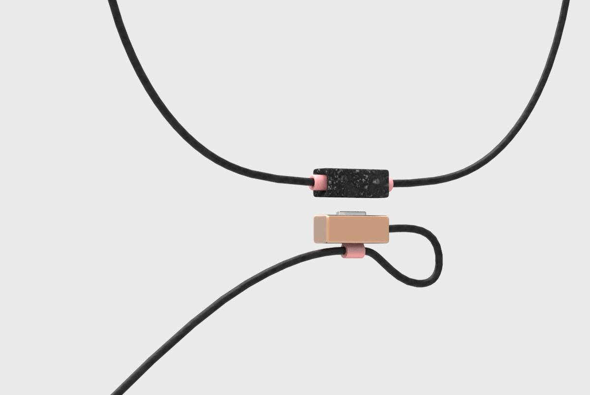

20171117 日記
昨天（11/16）太忙沒寫日記，總之也是開會的一天。
早上九點殺到學校，簡單分配一下present的範圍之後跟教授meeting，總之方向是可以，用固定的船上空間，去做可以搭配該空間模組化的服務設計。建議最好縮小範圍，挑一個空間當作小案例做具體設計，因為郵輪真的很大，我們選的 Quantum of Seas 號有18層樓，滿載光乘客就有將近五千人ＸＤ。
下午就繼續開會延續早上的方向來規劃。晚上回來之後做個人專案的建模。今天（11/17）跟 Fablab 的人約了要來印東西，所以非把模型蓋完不可。
rendering
今天早上（11/17）起來繼續蓋模型，剛好在最後一刻蓋完所以去吃飯然後印東西。印完之後參加印度同學的生日趴體。趴體上碰到一個印度同學的朋友，是芬蘭人，印度同學介紹我們認識，因為他大學時有來台灣MIT交換。他大學在 Aalto 念機械工程，選台灣是因為覺得台灣有夠遠，想來體驗一下異文化。
因為我們都有點喝醉，但聊的內容還蠻有趣的。他問我芬蘭食物很無聊齁，綜合一下我們各自不滿的點
- 芬蘭食物很健康但傳統食物沒有蔬菜我會死掉
- 台灣食物很多蔬菜可是都煮熟了他覺得超油
我倒是沒問他喜不喜歡，反正每個人都說喜歡，我到現在也搞不清楚真的假的。
接著是語言，他問我會不會講台語，我說不會。總之我解釋了一下台灣經過日治時代跟國府逃來之後的語言打壓，年輕一輩已經大不如上上幾輩。我之前常被老人嫌「哩喜呆灣人那誒晦曉工台曆」，我有試著解釋這不一定是真的責罵，而是一種抱怨，而台語有消失的危機。講到這點他有感覺，因為他的母語是瑞典語，老媽講瑞典語老爸講芬蘭語，小時候住在Ålands（瑞典語為主的區域），因為鄰居都講瑞典語，母語就變成瑞典語。但後來搬家，搬到芬蘭語為主的區域，他弟就不太會講瑞典語了。講瑞典語的人口越來越少，現在只剩下5%。不過講瑞典語不會影響他的認同，他覺得自己還是芬蘭人。
然後他有問我為啥台灣人喜歡日本人，我大概用日治時代轉往國府時代兩邊政府治理的落差來說，另外還有冷戰時期同樣處於第一島鏈的位置跟戰略聯盟關係一直延續到現在，最後是文化相似性。
另外聊到台科的校園生活，他表示台灣人的英文普遍不太好ＸＤ。他覺得最WTF的台灣文化之一，是學生在口試要送小禮物給教授。
我想說這什麼，我怎麼沒印象，搞了半天才弄懂他是說研究生口試的時候要準備美食佳餚給口委品嚐。然後他覺得台灣的教授好恐怖，好有距離感，跟學生的關係很上對下。他聽台灣同學講的的當下，無法理解唸書自己念好就好，為什麼要請請教授吃東西才可以畢業。像他們教授口渴就自己準備喝的帶來就好。
我大概解釋了一下我們可能覺得遠來是客，另外的確是有師生尊卑的差別，所以學生不覺得由自己準備有什麼問題。
好累喔，寫不完了，先睡晚安。